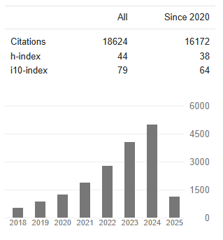
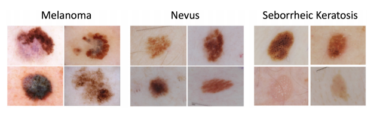

<!DOCTYPE HTML>
<html>
<head>
    <title>Noel C. F. Codella, Ph.D.</title>
    <meta charset="utf-8" />
    <meta name="viewport" content="width=device-width, initial-scale=1" />
    <!--[if lte IE 8]><script src="assets/js/ie/html5shiv.js"></script><![endif]-->
    <link rel="stylesheet" href="assets/css/main.css" />
    <!--[if lte IE 8]><link rel="stylesheet" href="assets/css/ie8.css" /><![endif]-->
</head>
<body>

<section id="header">
    <!--<header style="background-color:#99ceff; border-bottom: 5px solid #4da6ff">-->
    <header style="background-color:#9c9c9c; border-bottom: 5px solid #4da6ff">
        
        <br><font id="logo" size="5" color="#ffffff">Noel C. F. Codella, Ph.D. </font>
        <br><font size="3" color="#ffffff">Principal Researcher @ Microsoft </font>

    </header>
    <nav id="nav">
        <ul>
            <!--             <li><a href="#workshops">Workshops</a></li>
            <li><a href="#challenges">Challenges</a></li> -->
            <li><a href="#about" class="active">About Me</a></li>
            <li><a href="#publications">Research</a></li>
            <li><a href="#activities">Activities</a></li>
            <li><a href="#awards">Awards</a></li>
            <li><a href="#teaching">Teaching</a></li>
            <li><a href="#books">Books</a></li>
            <li><a href="#patents">Patents</a></li>
            <li><a href="#press">Press Coverage</a></li>
            <li><a href="#social">Social Media / Contact </a></li>
            <li><a href="codella-cv-2021.pdf">Curriculum Vitae</a></li>
        </ul>
    </nav>
    <footer>
        <ul class="icons">
            <!--
            <li><a href="#" class="icon fa-twitter"><span class="label">Twitter</span></a></li>
            <li><a href="#" class="icon fa-facebook"><span class="label">Facebook</span></a></li>
            <li><a href="#" class="icon fa-instagram"><span class="label">Instagram</span></a></li>
            <li><a href="#" class="icon fa-github"><span class="label">Github</span></a></li>
            -->
            <!-- <li><a href="mailto:support@isic-archive.com" class="icon fa-envelope"><span class="label">Email</span></a></li>-->
        </ul>
    </footer>
</section>

<div id="wrapper">
    <div id="main">
        <section id="one">
            <div id="about" class="container">
                <header class="major">
                    <h3>About Me</h3>
                </header>
               
                I am a Principal Researcher at Microsoft. My expertise spans topics across computer vision and healthcare, with publications in CVPR, ICCV, ECCV, ICLR, MICCAI, AAAI, Nature Medicine, Lancet Oncology, and other prestigious venues, some of which have been covered by major international news media organizations (CNN, Medgadget, etc.). Within computer vision, my interests include multimodal vision+language learning, transformer architectures, few-shot learning, video analysis, fairness, explainability, segmentation, and object detection. Within healthcare, my expertise includes dermatology, medical image analysis, electroencephalography, cardiac MRI, and human physiology. In dermatology, I am a co-founder of the International Skin Imaging Collaboration (ISIC) challenges on skin cancer classification, which have received over 114,000 total submissions from over 4,000 competitors to continuous live challenges (hosted at ISBI 2016-2017, MICCAI 2018-2020). My Ph.D. research was focused on cardiac MRI in the department of Human Physiology at the Weill Medical College of Cornell University.
                <br><br>
                In addition to technical expertise building state-of-art machine learning systems and identifying new fields of study, I have fundamental expertise in application domain risks and costs, especially in healthcare, where I have led and collaborated on numerous clinical validation studies and assessments of machine learning error characteristics, fairness, and biases. In these works, I have developed state-of-art evaluation protocols that have exposed previously unidentified errors when compared with established metrics.
                
                <!--<p>Dr. Codella is a Principal Researcher at Microsoft, and a graduate of Columbia University and Cornell University. His expertise includes Machine Learning, Computer Vision, Medical Imaging, Biomedical Engineering, Biology, and Physiology. 
                    
                    <br><br>Dr. Codella was the first to develop an artificial intelligence system capable of diagnosing melanoma from dermoscopy images with an accuracy higher than the average expert dermatologist (this work was covered in prominent media outlets, such as CNN and MedGadget). 
                    
                    <br><br>He is co-organizer of the International Skin Imaging Collaboration (ISIC) challenges on skin cancer classification, which have received over 13,000 total submissions to continuous live challenges, and 6,400 registrants over five years (hosted at venues such as ISBI 2016-2017, MICCAI 2018-2020). He is co-organizer of Cross-Domain Few-Shot Learning Challenge and Benchmark @ CVPR 2020, and co-chair of 3 workshops @ CVPR 2019-2020 related to skin imaging and few-shot learning, with over 120 paper submissions in total, and an audience of 100+ attendees. Dr. Codella was an Area Chair for ICLR 2017 and 2018. His publications are in prestigious venues, such as Nature Medicine, Lancet Oncology, ICLR, MICCAI, ECCV. He has 10 years of industrial research experience at IBM T. J. Watson Research Center, and has contributed software code to the IBM Watson Visual Recognition services. Dr. Codella has over 4000 citations, with an h-index of 28, and an i10-index of 49, according to Google Scholar. </p>-->

                <br><br><h4>Education:</h4>
                <ul>
                    <li>Ph.D., Physiology, Weill Medical College of Cornell University (2010)</li>
                    <li>M.Eng., Computer Science, Cornell University (2005)</li>
                    <li>B.S., Computer Science, Columbia University (2004)</li>
                </ul>

                <br><h4>Recent News:</h4>
                <ul>
                    <li><b>07-27-2023:</b> <a href="https://www.nature.com/articles/s41591-023-02475-5">"A reinforcement learning model for AI-based decision support in skin cancer"</a> has been published in Nature Medicine</li>
                    <li><b>05-02-2023:</b> "UniFine: A Unified and Fine-grained Approach for Zero-shot Vision-Language Understanding" has been accepted to Findings of ACL</li>
                    <li><b>03-27-2023:</b> <a href="https://sites.google.com/view/iccv-mmfm">"What is Next in Multimodal Foundation Models"</a> workshop accepted to ICCV 2023 </li>
                    <li><b>03-07-2023:</b> Project Florence is now in <a href="https://azure.microsoft.com/en-us/blog/announcing-a-renaissance-in-computer-vision-ai-with-microsofts-florence-foundation-model/">Public Preview</a></li>
                    <li><b>02-27-2023:</b> <a href="https://arxiv.org/abs/2303.17228">Streaming Video Model</a> has been accepted to CVPR 2023 </li>
                    <li><b>02-25-2023:</b> The <a href="https://workshop2023.isic-archive.com/">Eighth ISIC Skin Image Analysis Workshop
                    </a> will be hosted at MICCAI 2023.</li>
                    <li><b>11-21-2022:</b> <a href="https://arxiv.org/abs/2205.01818v1">i-Code</a> has been accepted to AAAI 2023 </li>
                    <li><b>10-23-2022:</b> The <a href="https://l2id.github.io/l2id2022/">L2ID @ ECCV 2022</a> Workshop talks are now all <a href="https://www.youtube.com/channel/UC2of8xmN_238SaqJB3ryv0w/playlists">available on YouTube</a></li>
                    <li><b>08-11-2022:</b> Accepted role of Area Chair at <a href="https://iclr.cc/Conferences/2023/CallForPapers">ICLR 2023</a></li>
                    <li><b>07-03-2022:</b> <a href="https://arxiv.org/pdf/2204.03645.pdf">DaViT</a> and <a href="https://arxiv.org/pdf/2207.12661.pdf">MS-CLIP</a> have both been accepted to ECCV 2022 </li>
                    <li><b>06-11-2022:</b> Our Florence Foundation Model was featured in an article in <a href="https://www.economist.com/interactive/briefing/2022/06/11/huge-foundation-models-are-turbo-charging-ai-progress">The Economist</a></li>
                    <li><b>05-24-2022:</b> Our work on the <a href="https://arxiv.org/abs/2111.11432">Florence computer vision foundation model</a> was featured in <a href="https://www.youtube.com/watch?v=sOgi94TrfuE">Microsoft CEO Satya Nadella's keynote at Microsoft Build 2022</a></li>
                    <li><b>05-20-2022:</b> <a href="https://arxiv.org/abs/2103.15808">CvT</a> models are now available on <a href="https://huggingface.co/docs/transformers/main/en/model_doc/cvt#transformers.CvtForImageClassification"> HuggingFace Transformers</a> </li>
                    <li><b>05-13-2022:</b> Our CvT paper has been ranked <a href="https://www.paperdigest.org/2022/05/most-influential-iccv-papers-2022-05/">5th most influential ICCV paper</a> by PaperDigest</li>
                    <li><b>04-26-2022:</b> Invited speaker at the <a href="https://www.buffalo.edu/ai-data-science/news-events/iad-days.html">University of Buffalo Institute for Artificial Intelligence</a></li>
                    <li><b>04-22-2022:</b> Nominated as a <a href="https://iclr.cc/Conferences/2022/ProgramCommittee">Highlighted Area Chair of ICLR 2022</a></li>
                    <li><b>04-20-2022:</b> <a href="https://www.thelancet.com/journals/landig/article/PIIS2589-7500(22)00021-8/fulltext">"Validation of AI prediction models"</a> published in Lancet Digital Health 2022.</li>
                    <li><b>04-11-2022:</b> On organizing committees for two ECCV 2022 workshops: <a href="https://l2id.github.io/l2id2022/">L2ID</a> & <a href="https://workshop2022.isic-archive.com/">ISIC</a></li>
                    <li><b>03-30-2022:</b> Accepted role of Area Chair at <a href="https://nips.cc/">NeurIPS 2022</a></li>
                    <li><b>03-02-2022:</b> <a href="https://arxiv.org/abs/2112.09106">RegionCLIP</a> has been accepted to CVPR 2022 [ <a href="https://arxiv.org/pdf/2112.09106.pdf">Paper</a> | <a href="https://github.com/microsoft/RegionCLIP">Code</a> ] </li>
                    <li><b>01-03-2022:</b> Accepted role of Area Chair at <a href="https://www.icpr2022.com/">ICPR 2022</a></li>
                    <li><b>12-01-2021:</b> <a href="https://jamanetwork.com/journals/jamadermatology/article-abstract/2786912?widget=personalizedcontent&previousarticle=2784295">CLEAR Derm Consensus Guidlines</a> Published in JAMA Dermatology</li>
                    <li><b>08-06-2021:</b> Assigned to Senior Program Committee of AAAI 2022</li>
                    <li><b>08-02-2021:</b> Assigned an Associate Editor of <a href="https://signalprocessingsociety.org/publications-resources/ieee-transactions-multimedia">IEEE Transactions on Multimedia</a></li>
					<li><b>07-22-2021:</b> Convolutional Vision Transformer (CvT) accepted to ICCV 2021 [ <a href="https://arxiv.org/abs/2103.15808">Paper</a> | <a href="https://github.com/microsoft/CvT">Code</a> ]</li>
                    <li><b>06-20-2021:</b> Co-organizer and session chair for the <a href="https://l2id.github.io/">L2ID Workshop @ CVPR 2021</a> </li>
                    <li><b>06-19-2021:</b> On steering committee of the <a href="https://workshop2021.isic-archive.com/">Skin Image Analysis Workshop @ CVPR 2021</a></li>
                    <li><b>06-15-2021: </b>Accepted role of Area Chair at <a href="https://iclr.cc/">ICLR 2022</a></li>
                    <li><b>09-21-2020:</b> Joined Microsoft Azure Cognitive Services! </li>
                    <li><b>08-26-2020:</b> <a href="https://arxiv.org/abs/1912.07200">A Broader Study of Cross-Domain Few-Shot Learning</a> presented at ECCV 2020</li>
                    <li><b>06-22-2020:</b> <a href="https://www.nature.com/articles/s41591-020-0942-0?fbclid=IwAR309d9dYmX9qL2FYND2s6nT0MJ2lEIGQUSo9b5K2Eq33CWo97aloWiKRK4">Dermatology Human-AI collaboration study</a> published in <i>Nature Medicine</i></li>
                    <li><b>06-19-2020:</b> Organizer of <a href="https://www.learning-with-limited-labels.com/">Learning with Limited Labels Workshop @ CVPR 2020</a></li>
                    <li><b>06-15-2020:</b> Organizer of <a href="https://workshop2020.isic-archive.com/">Skin Image Analysis Workshop @ CVPR 2020</a></li>
                    <li><b>10-31-2019:</b> Speaking at the <a href="https://mskcc.cloud-cme.com/Assets/mskcc/data/DermInformatics_2019Brochure.pdf">Transforming Dermatology in the Digital Era</a> continuing medical education session at Memorial Sloan-Kettering</li>
                    <li><b>07-15-2019:</b> <a href="https://www.thelancet.com/journals/lanonc/article/PIIS1470-2045(19)30333-X/fulltext">Dermatology Human-AI comparison study</a> published at Lancet Oncology</li>

                </ul>


            </div>
        </section>

        <section id="publications">
            <div class="container">
                <h2>Research</h3>

                <table>
                    <tr>
                        <td width="55%" style="vertical-align:middle;" valign="center">
                            <p><b>Machine Learning:</b><br>    [ <a href="#computervision">Computer Vision</a> | <a href="#explain">Explainability</a> ] 
                                <br><br><b>Healthcare:</b><br>     [ <a href="#derm">Dermatology</a> | <a href="#eeg">EEG</a> | <a href="#mri">MRI</a> | <a href="#other">Other</a> ]</p>
                        </td>
                        <td>
                            <center><a href="https://scholar.google.com/citations?user=8BnjC-4AAAAJ&hl=en&oi=ao">Google Scholar Profile<br></a></center>
                        </td>
                    </tr>
                </table>


                <hr>

                <br>
                <h3 id="computervision" align="center">Computer Vision</h4>

                <div class="table-wrapper">
                    <table>
                        <tbody>
                        <tr>
                            <td width="30%"><center><b>CVPR 2023</b><br></center></td>
                            <td width="80%" style="vertical-align:middle;" valign="center"><b>Streaming Video Model</b><br><br> Video understanding tasks have traditionally been modeled by two separate architectures, specially tailored for two distinct tasks. Sequence-based video tasks, such as action recognition, use a video backbone to directly extract spatiotemporal features, while frame-based video tasks, such as multiple object tracking (MOT), rely on single fixed-image backbone to extract spatial features. In contrast, we propose to unify video understanding tasks into one novel streaming video architecture, referred to as Streaming Vision Transformer (S-ViT). S-ViT first produces frame-level features with a memory-enabled temporally-aware spatial encoder to serve the frame-based video tasks. Then the frame features are input into a task-related temporal decoder to obtain spatiotemporal features for sequence-based tasks. The efficiency and efficacy of S-ViT is demonstrated by the state-of-the-art accuracy in the sequence-based action recognition task and the competitive advantage over conventional architecture in the frame-based MOT task. We believe that the concept of streaming video model and the implementation of S-ViT are solid steps towards a unified deep learning architecture for video understanding. <br><br>  [ <a href="https://arxiv.org/abs/2303.17228">Paper</a> ] </td>
                        </tr>
                        <tr>
                            <td width="30%"><center><b>AAAI 2023</b><br></center></td>
                            <td width="80%" style="vertical-align:middle;" valign="center"><b>i-Code: An Integrative and Composable Multimodal Learning Framework</b><br><br> Human intelligence is multimodal; we integrate visual, linguistic, and acoustic signals to maintain a holistic worldview. Most current pretraining methods, however, are limited to one or two modalities. We present i-Code, a self-supervised pretraining framework where users may flexibly combine the modalities of vision, speech, and language into unified and general-purpose vector representations. In this framework, data from each modality are first given to pretrained single-modality encoders. The encoder outputs are then integrated with a multimodal fusion network, which uses novel attention mechanisms and other architectural innovations to effectively combine information from the different modalities. The entire system is pretrained end-to-end with new objectives including masked modality unit modeling and cross-modality contrastive learning. Unlike previous research using only video for pretraining, the i-Code framework can dynamically process single, dual, and triple-modality data during training and inference, flexibly projecting different combinations of modalities into a single representation space. Experimental results demonstrate how i-Code can outperform state-of-the-art techniques on five video understanding tasks and the GLUE NLP benchmark, improving by as much as 11% and demonstrating the power of integrative multimodal pretraining. <br><br>  [ <a href="https://arxiv.org/abs/2205.01818v1">Paper</a> ] </td>
                        </tr>
                        <tr>
                            <td width="30%"><center><b>ECCV 2022</b><br></center></td>
                            <td width="80%" style="vertical-align:middle;" valign="center"><b>Learning Visual Representation from Modality-Shared Contrastive Language-Image Pre-training</b><br><br> We investigate a variety of Modality-Shared Contrastive Language-Image Pre-training (MS-CLIP) frameworks. More specifically, we question how many parameters of a transformer model can be shared across modalities during contrastive pre-training, and rigorously examine architectural design choices that position the proportion of parameters shared along a spectrum. In studied conditions, we observe that a mostly unified encoder for vision and language signals outperforms all other variations that separate more parameters. Additionally, we find that light-weight modality-specific parallel modules further improve performance. Experimental results show that the proposed MS-CLIP approach outperforms vanilla CLIP by up to 13% relative in zero-shot ImageNet classification (pre-trained on YFCC-100M), while simultaneously supporting a reduction of parameters.
                                of the entire model. <br><br>  [ <a href="https://arxiv.org/pdf/2207.12661.pdf">Paper</a> ] </td>
                        </tr>
                        <tr>
                            <td width="30%"><center><b>ECCV 2022</b><br></center></td>
                            <td width="80%" style="vertical-align:middle;" valign="center"><b>DaViT: Dual Attention Vision Transformers</b><br><br> In this work, we introduce Dual Attention Vision Transformers (DaViT), a simple yet effective vision transformer architecture that is able to capture global context while maintaining computational efficiency. We propose approaching the problem from an orthogonal angle: exploiting self-attention mechanisms with both “spatial tokens” and “channel tokens”. With spatial tokens, the spatial dimension defines the token scope, and the channel dimension defines the token feature dimension. With channel tokens, we have the inverse: the channel dimension defines the token scope, and the spatial dimension defines the token feature dimension. We further group tokens along the sequence direction for both spatial and channel tokens to maintain the linear complexity of the entire model. <br><br>  [ <a href="https://arxiv.org/pdf/2204.03645.pdf">Paper</a> ] </td>
                        </tr>
                        <tr>
                            <td width="30%"><center><b>arXiv 2021</b><br></center></td>
                            <td width="80%" style="vertical-align:middle;" valign="center"><b>Florence: A New Foundation Model for Computer Vision </b><br><br> Automated visual understanding of our diverse and open world demands computer vision models to generalize well with minimal customization for specific tasks, similar to human vision. Computer vision foundation models, which are trained on diverse, large-scale dataset and can be adapted to a wide range of downstream tasks, are critical for this mission to solve real-world computer vision applications. While existing vision foundation models such as CLIP (Radford et al., 2021), ALIGN (Jia et al., 2021), and Wu Dao 2.0 (Wud) focus mainly on mapping images and textual representations to a cross-modal shared representation, we introduce a new computer vision foundation model, Florence, to expand the representations from coarse (scene) to fine (object), from static (images) to dynamic (videos), and from RGB to multiple modalities (caption, depth) <br><br>  [ <a href="https://arxiv.org/pdf/2111.11432.pdf">Paper</a> ] </td>
                        </tr>
                        <tr>
                            <td width="30%"><center><b>CVPR 2022</b><br></center></td>
                            <td width="80%" style="vertical-align:middle;" valign="center"><b>RegionCLIP: Region-based Language-Image Pretraining. </b><br><br> We propose a new method called RegionCLIP that significantly extends CLIP to learn region-level visual representations, thus enabling  fine-grained alignment between image regions and textual concepts. Further, the learned region representations support zero-shot inference for object detection, showing promising results on both COCO and LVIS datasets. <br><br>  [ <a href="https://arxiv.org/pdf/2112.09106.pdf">Paper</a> | <a href="https://github.com/microsoft/RegionCLIP">Code</a> ] </td>
                        </tr>
                        <tr>
                            <td width="30%"><center><b>ICCV 2021</b><br></center></td>
                            <td width="80%" style="vertical-align:middle;" valign="center"><b>CvT: Introducing Convolutions to Vision Transformers.</b><br><br> We present in this paper a new architecture, named Convolutional vision Transformer (CvT), that improves Vision Transformer (ViT) in performance and efficiency by introducing convolutions into ViT to yield the best of both designs. <br><br>  [ <a href="https://arxiv.org/abs/2103.15808">Paper</a> | <a href="https://github.com/microsoft/CvT">Code</a> ] </td>
                        </tr>
                        <tr>
                            <td width="30%"><center><b>ECCV 2020</b><br></center></td>
                            <td width="80%" style="vertical-align:middle;" valign="center"><b>A Broader Study of Cross-Domain Few-Shot Learning.</b> <br><br>In this paper, we propose the Broader Study of Cross-Domain Few-Shot Learning (BSCD-FSL)
                                benchmark, consisting of image data from a diverse assortment of image acquisition methods. This includes natural images, such as crop disease images,
                                but additionally those that present with an increasing dissimilarity to natural images, such as satellite images, dermatology images, and x-rays. <br><br>  [ <a href="https://arxiv.org/abs/1912.07200">Paper</a> | <a href="https://github.com/IBM/cdfsl-benchmark">Code</a> ]</td>
                        </tr>
                        <tr>
                            <td width="30%"><center><b>ACM MM 2014</b><br></center></td>
                            <td width="80%" style="vertical-align:middle;" valign="center"><b>Modeling Attributes from Category-Attribute Proportions</b> <br><br> In this paper, we propose to model attributes from category-attribute proportions. The proposed framework can model attributes without attribute labels on the images. <br><br>  [ <a href="https://web.archive.org/web/20141014140046id_/http://www.ee.columbia.edu:80/ln/dvmm/publications/14/felixyu_llp_mm2014.pdf">Paper</a> ]</td>
                        </tr>
                        </tbody>
                    </table>
                </div>


                <br>
                <h3 id="explain" align="center">Explainability</h4>

                <div class="table-wrapper">
                    <table>
                        <tbody>
                            <tr>
                                <td width="30%"><center><b>ICML HILL 2019</b><br></center></td>
                                <td width="80%" style="vertical-align:middle;" valign="center"><b>Teaching AI to Explain its Decisions Using Embeddings and Multi-Task Learning</b><br><br> This framework
                                    augments training data to include explanations
                                    elicited from domain users, in addition to features
                                    and labels. This approach ensures that explanations for predictions are tailored to the complexity
                                    expectations and domain knowledge of the consumer <br><br>  [ <a href="https://arxiv.org/pdf/1906.02299.pdf">Paper</a> ] </td>
                            </tr>
                        <tr>
                            <td width="30%"><center><b>AAAI AIES 2019</b><br></center></td>
                            <td width="80%" style="vertical-align:middle;" valign="center"><b>TED: Teaching AI to explain its decisions</b><br><br> This work introduces a simple, practical framework, called Teaching Explanations for Decisions (TED), that provides meaningful explanations that match the mental model of the consumer. We illustrate the generality and effectiveness of this approach with two different examples, resulting in highly accurate explanations with no loss of prediction performance. <br><br>  [ <a href="https://arxiv.org/pdf/1811.04896.pdf">Paper</a> ] </td>
                        </tr>
                        <tr>
                            <td width="30%"><center><b>MICCAI IMIMIC 2018</b><br></center></td>
                            <td width="80%" style="vertical-align:middle;" valign="center"><b>Collaborative Human-AI (CHAI): Evidence-based interpretable melanoma classification in dermoscopic images.</b> <br><br>In this work, an approach for evidence-based classification is presented. A feature embedding is learned with CNNs, triplet-loss, and global average pooling, and used to classify via kNN search. Evidence is provided as both the discovered neighbors, as well as localized image regions most relevant to measuring distance between query and neighbors. <br><br>  [ <a href="https://arxiv.org/pdf/1805.12234.pdf">Paper</a> ]</td>
                        </tr>
                        </tbody>
                    </table>
                </div>


                <br>
                <h3 id="derm" align="center">Dermatology</h4>

                <div class="table-wrapper">
                    <table>
                        <tbody>
                            <!-- https://www.thelancet.com/journals/landig/article/PIIS2589-7500(22)00021-8/fulltext -->
                            <tr>
                                <td width="30%"><center><b>Nature Medicine 2023</b><br></center></td>
                                <td width="80%" style="vertical-align:middle;" valign="center"><b> A reinforcement learning model for AI-based decision support in skin cancer</b> <br><br> We investigated whether human preferences hold the potential to improve diagnostic artificial intelligence (AI)-based decision support using skin cancer diagnosis as a use case. We utilized nonuniform rewards and penalties based on expert-generated tables, balancing the benefits and harms of various diagnostic errors, which were applied using reinforcement learning. Compared with supervised learning, the reinforcement learning model improved the sensitivity for melanoma from 61.4% to 79.5% and for basal cell carcinoma from 79.4% to 87.1%. AI overconfidence was also reduced while simultaneously maintaining accuracy. Reinforcement learning increased the rate of correct diagnoses made by dermatologists by 12.0% and improved the rate of optimal management decisions from 57.4% to 65.3%. We further demonstrated that the reward-adjusted reinforcement learning model and a threshold-based model outperformed naïve supervised learning in various clinical scenarios. Our findings suggest the potential for incorporating human preferences into image-based diagnostic algorithms. <br><br>  [ <a href="https://www.nature.com/articles/s41591-023-02475-5">Paper</a> ] </td>
                            </tr>
                        
                            <tr>
                            <td width="30%"><center><b>Lancet Digital Health 2022</b><br></center></td>
                            <td width="80%" style="vertical-align:middle;" valign="center"><b> Validation of artificial intelligence prediction models for skin cancer diagnosis using dermoscopy images</b> <br><br> Previous studies of artificial intelligence (AI) applied to dermatology have shown AI to have higher diagnostic classification accuracy than expert dermatologists; however, these studies did not adequately assess clinically realistic scenarios, such as how AI systems behave when presented with images of disease categories that are not included in the training dataset or images drawn from statistical distributions with significant shifts from training distributions. We aimed to simulate these real-world scenarios and evaluate the effects of image source institution, diagnoses outside of the training set, and other image artifacts on classification accuracy, with the goal of informing clinicians and regulatory agencies about safety and real-world accuracy. <br><br>  [ <a href="https://www.thelancet.com/journals/landig/article/PIIS2589-7500(22)00021-8/fulltext">Paper</a> ] </td>
                        </tr>
                        <tr>
                            <td width="30%"><center><b>JAMA Dermatology 2021</b><br></center></td>
                            <td width="80%" style="vertical-align:middle;" valign="center"><b> CLEAR Derm Consensus Guidelines </b> <br><br> In this consensus statement, key recommendations for developers and reviewers of imaging-based AI reports in dermatology were formulated and grouped into the topics of (1) data, (2) technique, (3) technical assessment, and (4) application. Guidelines are proposed to address current challenges in dermatology image-based AI that hinder clinical translation, including lack of image standardization, concerns about potential sources of bias, and factors that cause performance degradation. <br><br>  [ <a href="https://jamanetwork.com/journals/jamadermatology/article-abstract/2786912?widget=personalizedcontent&previousarticle=2784295">Paper</a> ] </td>
                        </tr>
                        <tr>
                                <td width="30%"><center><b>Nature Scientific Data 2021</b><br></center></td>
                                <td width="80%" style="vertical-align:middle;" valign="center"><b>A patient-centric dataset of images and metadata for identifying melanomas using clinical context.</b> <br><br>Prior skin image datasets have not addressed patient-level information obtained from multiple skin lesions from the same patient. Though artificial intelligence classification algorithms have achieved expert-level performance in controlled studies examining single images, in practice dermatologists base their judgment holistically from multiple lesions on the same patient. The 2020 SIIM-ISIC Melanoma Classification challenge dataset described herein was constructed to address this discrepancy between prior challenges and clinical practice, providing for each image in the dataset an identifier allowing lesions from the same patient to be mapped to one another.  <br><br>  [ <a href="https://www.nature.com/articles/s41597-021-00815-z">Paper</a> ] </td>
                        </tr>
                        <tr>
                            <td width="30%"><center><b>Nature Medicine 2020</b><br></center></td>
                            <td width="80%" style="vertical-align:middle;" valign="center"><b>Human–computer collaboration for skin cancer recognition.</b> <br><br>Here we build on recent achievements in the accuracy of image-based AI for skin cancer diagnosis to address the effects of varied representations of AI-based support across different levels of clinical expertise and multiple clinical workflows.  <br><br>  [ <a href="https://www.nature.com/articles/s41591-020-0942-0?fbclid=IwAR309d9dYmX9qL2FYND2s6nT0MJ2lEIGQUSo9b5K2Eq33CWo97aloWiKRK4">Paper</a> ] </td>
                        </tr>
                        <tr>
                            <td width="30%"><center><b>MICCAI 2020</b><br></center></td>
                            <td width="80%" style="vertical-align:middle;" valign="center"><b>Fairness of Classifiers Across Skin Tones in Dermatology</b> <br><br>In this paper, we present an approach to estimate skin tone in skin disease benchmark datasets and investigate whether model performance is dependent on this measure.  <br><br>  [ <a href="https://link.springer.com/chapter/10.1007/978-3-030-59725-2_31">Paper</a> | <a href="https://arxiv.org/pdf/1910.13268.pdf">arXiv</a> ] </td>
                        </tr>
                        <tr>
                            <td width="30%"><center><b>Lancet Oncology 2019</b><br></center></td>
                            <td width="80%" style="vertical-align:middle;" valign="center"><b>Comparison of the accuracy of human readers versus machine-learning algorithms for pigmented skin lesion classification: an open, web-based, international, diagnostic study. </b> <br><br>We provide a state-of-the-art comparison of the most 
                                advanced machine-learning algorithms with a large number of 
                                human readers, including the most experienced human experts <br><br>  [ <a href="https://www.thelancet.com/journals/lanonc/article/PIIS1470-2045(19)30333-X/fulltext">Paper</a> ]</td>
                        </tr>
                        <tr>
                            <td width="30%"><center><b>IEEE JBHI 2019</b><br></center></td>
                            <td width="80%" style="vertical-align:middle;" valign="center"><b>Dermoscopy Image Analysis: Overview and
                                Future Directions. </b> <br><br>In this paper, we present a brief overview of
                                this exciting subfield of medical image analysis, primarily
                                focusing on three aspects of it, namely, segmentation, feature extraction, and classification. We then provide future
                                directions for researchers. <br><br>  [ <a href="https://faculty.uca.edu/ecelebi/documents/JBHI_2019a.pdf">Paper</a> ]</td>
                        </tr>
                        <tr>
                            <td width="30%"><center><b>Seminars in Cutaneous Medicine and Surgery 2019</b><br></center></td>
                            <td width="80%" style="vertical-align:middle;" valign="center"><b>The role of public challenges and data sets towards algorithm development, trust, and use in clinical practice. </b> <br><br>In this article, we summarize recent advancements in machine learning, with a focused perspective on the role of public challenges and data sets on the progression of these technologies in skin imaging. In addition, we highlight the remaining hurdles toward effective implementation of technologies to the clinical workflow and discuss how public challenges and data sets can catalyze the development of solutions.<br><br>  [ <a href="https://europepmc.org/article/med/31051022">Paper</a> ]<br>(Please email for a free copy)</td>
                        </tr>
                        <tr>
                            <td width="30%"><center><b>Journal of the American Academy of Dermatology 2018</b><br></center></td>
                            <td width="80%" style="vertical-align:middle;" valign="center"><b>Results of the 2016 International Skin Imaging Collaboration International Symposium on Biomedical Imaging challenge: Comparison of the accuracy of computer algorithms to dermatologists for the diagnosis of melanoma from dermoscopic images. </b> <br><br>We sought to compare melanoma diagnostic accuracy of computer algorithms to dermatologists using dermoscopic images. <br><br>  [ <a href="https://www.sciencedirect.com/science/article/pii/S0190962217322028">Paper</a> ]</td>
                        </tr>

                        <tr>
                            <td width="30%"><center><b>EMBC 2018</b><br></center></td>
                            <td width="80%" style="vertical-align:middle;" valign="center"><b>Segmentation of both Diseased and Healthy Skin
                                from Clinical Photographs in a Primary Care Setting</b> <br><br> This work presents the first segmentation study of
                                both diseased and healthy skin in standard camera photographs
                                from a clinical environment. Challenges arise from varied lighting conditions, skin types, backgrounds, and pathological states <br><br>  [ <a href="https://arxiv.org/pdf/1804.05944.pdf">Paper</a> ]</td>
                        </tr>
                        <tr>
                            <td width="30%"><center><b>ISBI 2018</b><br></center></td>
                            <td width="80%" style="vertical-align:middle;" valign="center"><b>Skin lesion analysis toward melanoma detection: A challenge at the 2017 International Symposium on Biomedical Imaging (ISBI), hosted by the International Skin Imaging Collaboration (ISIC). </b> <br><br> This article describes the design, implementation, and results of the latest installment of the dermoscopic image analysis benchmark challenge. The goal is to support research and development of algorithms for automated diagnosis of melanoma, the most lethal skin cancer.  <br><br>  [ <a href="https://arxiv.org/pdf/1710.05006.pdf">Paper</a> ]</td>
                        </tr>
                        <tr>
                            <td width="30%"><center><b>IBM JRD 2016</b><br></center></td>
                            <td width="80%" style="vertical-align:middle;" valign="center"><b>Deep learning ensembles for melanoma recognition in dermoscopy images.</b> <br><br> We propose a system that combines recent 
                                developments in deep learning with established machine learning approaches, creating
                                ensembles of methods that are capable of segmenting skin lesions, as well as analyzing the 
                                detected area and surrounding tissue for melanoma detection.   <br><br>  [ <a href="https://arxiv.org/ftp/arxiv/papers/1610/1610.04662.pdf">Paper</a> ]</td>
                        </tr>
                        <tr>
                            <td width="30%"><center><b>MICCAI MLMI 2015</b><br></center></td>
                            <td width="80%" style="vertical-align:middle;" valign="center"><b>Deep learning, sparse coding, and SVM for melanoma recognition in dermoscopy images. </b> <br><br> This work presents an approach for melanoma recognition in dermoscopy images that combines deep learning, sparse coding, and support vector machine (SVM) learning algorithms. One of the beneficial aspects of the proposed approach is that unsupervised learning within the domain, and feature transfer from the domain of natural photographs, eliminates the need of annotated data in the target task to learn good features.    <br><br>  [ <a href="https://www.researchgate.net/profile/Noel-Codella/publication/282853810_Deep_Learning_Sparse_Coding_and_SVM_for_Melanoma_Recognition_in_Dermoscopy_Images/links/561eed5c08aec7945a27129f/Deep-Learning-Sparse-Coding-and-SVM-for-Melanoma-Recognition-in-Dermoscopy-Images.pdf">Paper</a> ]</td>
                        </tr>
                        </tbody>
                    </table>
                </div>


                <br>
                <h3 id="eeg" align="center">Electroencephalography (EEG)</h4>

                <div class="table-wrapper">
                    <table>
                        <tbody>
                        <tr>
                            <td width="30%"><center><b>ICLR 2016</b><br></center></td>
                            <td width="80%" style="vertical-align:middle;" valign="center"><b>Learning Representations from EEG with Deep Recurrent Convolutional Neural Networks</b><br><br> One of the challenges in modeling cognitive events from electroencephalogram
                                (EEG) data is finding representations that are invariant to inter- and intra-subject
                                differences, as well as to inherent noise associated with EEG data collection.
                                Herein, we propose a novel approach for learning such representations from multichannel EEG time-series, and demonstrate its advantages in the context of mental
                                load classification task. <br><br>  [ <a href="https://arxiv.org/pdf/1511.06448.pdf">Paper</a> ] </td>
                        </tr>
                        </tbody>
                    </table>
                </div>

                <br>
                <h3 id="mri" align="center">Magnetic Resonance Imaging (MRI)</h4>

                <div class="table-wrapper">
                    <table>
                        <tbody>
                            <tr>
                                <td width="30%"><center><b>Journal of Cardiovascular Magnetic Resonance 2019</b></center></td>
                                <td width="80%" style="vertical-align:middle;" valign="center"><b>Machine learning derived segmentation of phase velocity encoded cardiovascular magnetic resonance for fully automated aortic flow quantification</b> <br><br> Fully automated machine learning PC-CMR segmentation performs robustly for aortic flow quantification - yielding rapid segmentation, small differences with manual segmentation, and identification of differential forward/left ventricular volumetric stroke volume in context of concomitant mitral regurgitation. Findings support use of machine learning for analysis of large scale CMR datasets. <br><br>  [ <a href="https://link.springer.com/article/10.1186/s12968-018-0509-0">Paper</a> ]</td>
                            </tr>

                            <tr>
                                <td width="30%"><center><b>JACC: Cardiovascular Imaging 2016</b><br></center></td>
                                <td width="80%" style="vertical-align:middle;" valign="center"><b>Echocardiographic Algorithm for Post–Myocardial Infarction LV Thrombus: A Gatekeeper for Thrombus Evaluation by Delayed Enhancement CMR</b> <br><br> The goal of this study was to determine the prevalence of post–myocardial infarction (MI) left ventricular (LV) thrombus in the current era and to develop an effective algorithm (predicated on echocardiography [echo]) to discern patients warranting further testing for thrombus via delayed enhancement (DE) cardiac magnetic resonance (CMR). <br><br>  [ <a href="https://www.sciencedirect.com/science/article/pii/S1936878X15006816">Paper</a> ]</td>
                            </tr>

                        <tr>
                            <td width="30%"><center><b>Circulation: Cardiovascular Imaging 2012</b><br></center></td>
                            <td width="80%" style="vertical-align:middle;" valign="center"><b>Improved Left Ventricular Mass Quantification With Partial Voxel Interpolation In Vivo and Necropsy Validation of a Novel Cardiac MRI
                                Segmentation Algorithm.</b> <br><br> This study tested LVM segmentation among clinical patients and laboratory animals undergoing CMR. In patients,
                                echocardiography (echo) was performed within 1 day of
                                CMR and used as a clinical comparator for LVM. In
                                laboratory animals, euthanasia was performed after CMR and
                                segmentation results were compared with ex vivo LV weight.
                                The aim was to examine the impact of partial voxel segmentation on CMR quantification of LVM <br><br>  [ <a href="https://www.ahajournals.org/doi/pdf/10.1161/CIRCIMAGING.111.966754">Paper</a> ]</td>
                        </tr>
                        <tr>
                            <td width="30%"><center><b>ICIP 2012</b><br></center></td>
                            <td width="80%" style="vertical-align:middle;" valign="center"><b>Cardiac Anatomy as a Biometric.</b><br><br>  In this study, we propose a novel biometric signature for human identification based on anatomically unique structures of
                                the left ventricle of the heart. An algorithm is developed that
                                analyzes the 3 primary anatomical structures of the left ventricle: the endocardium, myocardium, and papillary muscle <br><br>  [ <a href="https://www.researchgate.net/profile/Noel-Codella/publication/261387328_Cardiac_anatomy_as_a_biometric/links/55d229dd08aec1b0429dd46d/Cardiac-anatomy-as-a-biometric.pdf">Paper</a> ]</td>
                        </tr>
                        <tr>
                            <td width="30%"><center><b>Journal of Cardiovascular Magnetic Resonance 2010</b><br></center></td>
                            <td width="80%" style="vertical-align:middle;" valign="center"><b>Impact of diastolic dysfunction severity on global left ventricular volumetric filling-assessment by automated segmentation of routine cine cardiovascular magnetic resonance </b> <br><br> To examine relationships between severity of echocardiography (echo) -evidenced diastolic dysfunction (DD) and volumetric filling by automated processing of routine cine cardiovascular magnetic resonance (CMR). <br><br>  [ <a href="https://link.springer.com/article/10.1186/1532-429X-12-46">Paper</a> ]</td>
                        </tr>
                        <tr>
                            <td width="30%"><center><b>NMR in Biomedicine 2010</b><br></center></td>
                            <td width="80%" style="vertical-align:middle;" valign="center"><b>A radial self-calibrated (RASCAL) generalized autocalibrating partially parallel acquisition (GRAPPA) method using weight interpolation. </b><br><br>  A generalized autocalibrating partially parallel acquisition (GRAPPA) method for radial k-space sampling is presented that calculates GRAPPA weights without synthesized or acquired calibration data. <br><br>  [ <a href="https://www.ncbi.nlm.nih.gov/pmc/articles/PMC3241961/">Paper</a> ]</td>
                        </tr>
                        <tr>
                            <td width="30%"><center><b>Magnetic Resonance in Medicine 2010</b><br></center></td>
                            <td width="80%" style="vertical-align:middle;" valign="center"><b>Respiratory and Cardiac Self-Gated Free-Breathing
                                Cardiac CINE Imaging With Multiecho 3D Hybrid Radial
                                SSFP Acquisition. </b><br><br>  A respiratory and cardiac self-gated free-breathing three-dimensional cine steady-state free precession imaging
                                method using multiecho hybrid radial sampling is presented. <br><br>  [ <a href="https://onlinelibrary.wiley.com/doi/pdf/10.1002/mrm.22306">Paper</a> ]</td>
                        </tr>
                        <tr>
                            <td width="30%"><center><b>IEEE TBME 2010</b><br></center></td>
                            <td width="80%" style="vertical-align:middle;" valign="center"><b>Automatic Left Ventricle Segmentation Using
                                Iterative Thresholding and an Active Contour Model
                                With Adaptation on Short-Axis Cardiac MRI </b><br><br>  An automatic left ventricle (LV) segmentation algorithm is presented for quantification of cardiac output and myocardial mass in clinical practice. <br><br>  [ <a href="https://ieeexplore.ieee.org/document/4776520">Paper</a> ]</td>
                        </tr>
                        <tr>
                            <td width="30%"><center><b>Circulation: Cardiovascular Imaging 2009</b><br></center></td>
                            <td width="80%" style="vertical-align:middle;" valign="center"><b>Automated Segmentation of Routine Clinical Cardiac Magnetic Resonance Imaging for Assessment of Left Ventricular Diastolic Dysfunction</b><br><br>  Automated CMR segmentation can provide LV filling profiles that may offer insight into diastolic dysfunction. Patients with diastolic dysfunction have prolonged diastolic filling intervals, which are associated with echo-evidenced diastolic dysfunction independent of clinical and imaging variables. <br><br>  [ <a href="https://www.ahajournals.org/doi/full/10.1161/CIRCIMAGING.109.879304">Paper</a> ]</td>
                        </tr>
                        <tr>
                            <td width="30%"><center><b>Radiology 2008</b><br></center></td>
                            <td width="80%" style="vertical-align:middle;" valign="center"><b>Left Ventricle: Automated
                                Segmentation by Using Myocardial
                                Effusion Threshold Reduction and
                                Intravoxel Computation at MR Imaging </b><br><br>   The purpose of the study was to develop and
                                validate an algorithm for automated segmentation of the
                                left ventricular (LV) cavity that accounts for papillary
                                and/or trabecular muscles and partial voxels in cine magnetic resonance (MR) images, an algorithm called LV Myocardial Effusion Threshold Reduction with Intravoxel Computation (LV-METRIC). <br><br>  [ <a href="https://www.researchgate.net/profile/Noel-Codella/publication/23178333_Left_Ventricle_Automated_Segmentation_by_Using_Myocardial_Effusion_Threshold_Reduction_and_Intravoxel_Computation_at_MR_Imaging_1/links/55f7171a08aeafc8abf81ce6/Left-Ventricle-Automated-Segmentation-by-Using-Myocardial-Effusion-Threshold-Reduction-and-Intravoxel-Computation-at-MR-Imaging-1.pdf">Paper</a> ]</td>
                        </tr>

                        </tbody>
                    </table>
                </div>

                <br>
                <h3 id="other" align="center">Other Healthcare Research</h4>

                <div class="table-wrapper">
                    <table>
                        <tbody>
                        <tr>
                            <td width="30%"><center><b>MICCAI 2014</b><br></center></td>
                            <td width="80%" style="vertical-align:middle;" valign="center"><b>Automated medical image modality recognition by fusion of visual and text information.</b><br><br> In this work, we present a framework for medical image modality recognition based on a fusion of both visual and text classification methods. Experiments are performed on the public ImageCLEF 2013 medical image modality dataset, which provides figure images and associated fulltext articles from PubMed as components of the benchmark. <br><br>  [ <a href="https://link.springer.com/content/pdf/10.1007/978-3-319-10470-6_61.pdf">Paper</a> ] </td>
                        </tr>

                        <tr>
                            <td width="30%"><center><b>IBM JRD 2015</b><br></center></td>
                            <td width="80%" style="vertical-align:middle;" valign="center"><b>A generalized framework for medical image classification and recognition</b><br><br> In this work, we study the performance of a two-stage ensemble visual machine learning framework for classification of medical images. In the first stage, models are built for subsets of features and data, and in the second stage, models are combined. We demonstrate the performance of this framework in four contexts: 1) The public ImageCLEF (Cross Language Evaluation Forum) 2013 medical modality recognition benchmark, 2) echocardiography view and mode recognition, 3) dermatology disease recognition across two datasets, and 4) a broad medical image dataset, merged from multiple data sources into a collection of 158 categories covering both general and specific medical conceptsVincluding modalities, body regions, views, and disease states. In the first context, the presented system achieves state-of-art performance of 82.2% multiclass accuracy. In the second context, the system attains 90.48% multiclass accuracy. In the third, state-of-art performance of 90% specificity and 90% sensitivity is obtained on a small standardized dataset of 200 images using a leave-one-out strategy. For a larger dataset of 2,761 images, 95% specificity and 98% sensitivity is obtained on a 20% held-out test set. Finally, in the fourth context, the system achieves sensitivity and specificity of 94.7% and 98.4%, respectively, demonstrating the ability to generalize over domains. <br><br>  [ <a href="https://www.researchgate.net/profile/Noel-Codella/publication/275528217_A_generalized_framework_for_medical_image_classification_and_recognition/links/55d228d108ae0b8f3ef77871/A-generalized-framework-for-medical-image-classification-and-recognition.pdf">Paper</a> ] </td>
                        </tr>

                        </tbody>
                    </table>
                </div>


            </div>
        </section>

        <section id="activities">
            <div class="container">
                <h3>Professional Activities</h3>
                <p></p>

                <div class="table-wrapper">
                    <table>
                        <tbody>
                        <tr>
                            <td width="30%"><b>Area Chair:</b></td>
                            <td width="80%">ICLR 2018, 2019, 2022 (<a href="https://iclr.cc/Conferences/2022/ProgramCommittee">Highlighted</a>), 2023 <br> ICPR 2022 <br> NeurIPS 2022 </td>
                        </tr>

                        <tr>
                            <td width="30%"><b>Associate Editor:</b></td>
                            <td width="80%"><ul>
                                <li><a href="https://signalprocessingsociety.org/publications-resources/ieee-transactions-multimedia">IEEE Transactions on Multimedia</a></li>
                                <li><a href="https://ieeexplore.ieee.org/document/8660594">IEEE Journal of Biomedical and Health Informatics, Special Issue on Skin Image Analysis</a></li>
                                </ul>

                                </td>
                        </tr>

                        <tr>
                            <td width="30%"><b>Senior Program Committee:</b></td>
                            <td width="80%">AAAI 2022</td>
                        </tr>

						<tr>
                            <td width="30%"><b>Challenge Co-Founder / Co-Organizer: </b></td>
                            <td width="80%"><ul>
                                <li>International Skin Imaging Collaboration: ISBI <a href="https://challenge.isic-archive.com/landing/2016">2016</a>, <a href="https://challenge.isic-archive.com/landing/2017">2017</a>. MICCAI <a href="https://challenge.isic-archive.com/landing/2018">2018</a>, <a href="https://challenge.isic-archive.com/landing/2019">2019</a>, <a href="https://www.kaggle.com/c/siim-isic-melanoma-classification">2020</a></li>

                                <li>Cross-Domain Few-Shot Learning Benchmark: CVPR <a href="https://www.learning-with-limited-labels.com/">2020</a>, <a href="https://l2id.github.io/">2021</a></li>

                            </ul></td>
                        </tr>

                        <tr>
                            <td width="30%"><b>Workshop Co-Founder / Co-Organizer: </b></td>
                            <td width="80%"><ul>
                                <li>International Skin Imaging Collaboration: MICCAI <a href="https://workshop2018.isic-archive.com/">2018</a>. CVPR <a href="https://workshop2019.isic-archive.com/">2019</a>, <a href="https://workshop2020.isic-archive.com/">2020</a>, <a href="https://workshop2021.isic-archive.com/">2021</a>, ECCV <a href="https://workshop2022.isic-archive.com/">2022</a></li>

                                <li>Learning with Limited Labels: CVPR <a href="https://www.learning-with-limited-labels.com/">2020</a>, <a href="https://l2id.github.io/">2021</a>, ECCV <a href="https://l2id.github.io/l2id2022/">2022</a></li>

                            </ul></td>
                        </tr>

                        <tr>
                            <td width="30%"><b>Microsoft Community:</b></td>
                            <td width="80%"><ul>
                                <li>Microsoft Startups Mentor in Machine Learning (2020-Present)</li>
                            </ul></td>
                        </tr>

                        <tr>
                            <td width="30%"><b>IBM Research Community:</b></td>
                            <td width="80%"><ul>
                                <li>Computer Vision & Multimedia Professional Interest Community (PIC) Chair (2017-2020)</li>
                                <li>Global Technology Outlook (GTO) Advocate for Department of Cognitive Computing (2017)</li>
                                <li>Culture Club & IBM 5K Co-Organizer (2014-2020) </li>
                            </ul></td>
                        </tr>

                        </tbody>
                    </table>
                </div>
            </div>
        </section>

        <section id="awards">
            <div class="container">
                <h3>Awards</h3>
                <p>
                    <ul>
                        <li>IBM Outstanding Research Accomplishment Award (2019)</li>
                        <li>IBM Eminence and Excellence Award (2018)</li>
                        <li>IBM Outstanding Technical Achievement Award (2018)</li>
                        <li>IBM Research Image Award (2016)</li>
                        <li>IBM Invention Achievement Awards (2013, 2014, 2016, 2017, 2018)</li>
                        <li>IBM Research Division Award (2013)</li>
                        <li>ImageCLEF Medical Image Recognition 1st Place Team (2013)</li>
                        <li>IBM Eminence and Excellence Award (2012)</li>
                        <li>Cornell University Bits on our Mind (BOOM) Best in Category: Biological Science (2006)</li>
                    </ul>
                </p>
            </div>
        </section>

        <section id="teaching">
            <div class="container">
                <h3>Teaching</h3>
				
				<p>
				<ul>
                    <li>Columbia University: Guest Lecturer in Computer Vision (2018)</li>
                    <li>NYU: Guest Lecturer in Computer Vision (2016)</li>
                    <li>Stevens Institute of Technology: Adjunct Professor in Artificial Intelligence (2014-2016)</li>
				</ul>

				</p>
            </div>
        </section>

        <section id="books">
            <div class="container">
                <h3>Books</h3>
                
                <ul>
                    <li><a href="https://link.springer.com/referencework/10.1007/978-1-4614-7322-0?view=modern&page=1">Melanoma: </a> <a href="https://link.springer.com/referenceworkentry/10.1007/978-1-4614-7322-0_43-1">Artificial Intelligence Approach in Melanoma (2019)</a></li>
                </ul>
               
       
		     </div>
        </section>

        <section id="patents">
            <div class="container">
                <h3>Patents</h3>

                <br><p><b>Issued</b></p>
                <ul>
                    <li>Automatic identification of food substance (US10528793)</li>
                    <li>Method and system for categorizing heart disease states (US20150317789)</li>
                    <li>Static Image Segmentation (US9311716 B2)</li>
                    <li>Image Segmentation Techniques (US9299145 B2)</li>
                    <li>Techniques for spatial semantic attribute matching for location identification (US9251434 B2)</li>
                    <li>Techniques for ground-level photo geolocation using digital elevation (US9165217B2)</li>
                    <li>Unique Cardiovascular Measurements for Human Identification (US9031288B2)</li>
                    <li>Social media event detection and content-based retrieval (US9002069B2)</li>
                    <li>Method for segmenting objects in images (US8369590B2)</li>
                    <li>Viewpoint recognition in computer tomography images (US9652846)</li>
                    <li>Determination of unique items based on generating descriptive vectors of users (US10664894)</li>
                    <li>Surgical skin lesion removal (US10568695)</li>
                    <li>Surface reflectance reduction in images using non-specular portion replacement (US10255674)</li>
                </ul>

                <br><p><b>Provisional</b></p>
                <ul>
                    <li>Biological neuron to electronic computer interface (US Patent App. 15/851,949)</li>
                    <li>Estimating the Number of Attendees in a Meeting (US Patent App. 15/295,409)</li>
                    <li>System and method for comparing training data with test data (US Patent App. 14/982,036)</li>
                    <li>Identifying transfer models for machine learning tasks (US Patent App. 15/982,622)</li>
                    <li>Training transfer-focused models for deep learning (US Patent App. 16/373,149)</li>
                    <li>Generating and augmenting transfer learning datasets with pseudo-labeled images (US Patent App. 16/125,153)</li>
                    <li>Drug delivery device having controlled delivery and confirmation (US Patent App. 15/848,169)</li>
                    <li>Pill collection visual recognition for automatic compliance to prescriptions (US Patent App. 15/483,126)</li>
                    <li>Category Oversampling for Imbalanced Machine Learning (US Patent App. 14/500,023)</li>
                </ul>

            </div>
        </section>


        <section id="press">
            <div class="container">
                <h3>Featured Press Coverage</h3>

                <ul>
                <li><b>The Economist:</b> <a href="https://www.economist.com/interactive/briefing/2022/06/11/huge-foundation-models-are-turbo-charging-ai-progress"> Huge “foundation models” are turbo-charging AI progress</a></li>
                <li> <b>MedGadget:</b> <a href="https://www.medgadget.com/2017/06/using-watson-diagnose-skin-cancer-interview-ibm-computer-vision-scientist-noel-codella.html">Using Watson to Diagnose Skin Cancer: Interview with IBM Computer Vision Scientist, Noel Codella. </a></li> 
                <li><b>CNN:</b> <a href="http://money.cnn.com/2016/11/14/technology/ibm-skin-cancer-smartphone/index.html">IBM uses a smartphone to help diagnose skin cancer. </a></li>
                <li><b>Mashable:</b> <a href="http://mashable.com/2016/11/15/ibm-research-melanoma-testing-with-phone-camera/">IBM’s smart skin cancer detection tech is as accurate as expert dermatologists. </a></li>
                <li><b>ZDnet:</b> <a href="http://www.zdnet.com/article/ibms-computer-vision-research-zeroes-in-on-identifying-skin-cancer/"> IBM’s computer vision zeros in on identifying skin cancer. </a></li>
                <li> <b>Medium:</b> <a href="https://medium.com/cognitivebusiness/visual-recognition-could-help-detect-skin-cancer-6e3f3796f877">Visual recognition could help detect skin cancer. </a></li>
                <li> <b>VentureBeat:</b> <a href="https://venturebeat.com/2014/12/17/skin-cancer-meets-its-worst-nightmare-ibm/">Skin cancer meets its worst nightmare: IBM. </a></li>
                <li> <b>SoundCloud:</b> <a href="https://soundcloud.com/ibmresearch/using-cognitive-computing-to-visually-analyze-skin-cancer">Using Cognitive Computing to Visually Analyze Skin Cancer.  Audio Interview. </a></li>
                <li> <b>IBM Research Blog:</b> <a href="https://www.ibm.com/blogs/research/2016/11/identifying-skin-cancer-computer-vision/"> Identifying skin cancer with computer vision </a></li>
                <li> <b>IBM Press Release:</b> <a href="https://www.prnewswire.com/news-releases/ibm-research-scientists-investigate-use-of-cognitive-computing-based-visual-analytics-for-skin-cancer-image-analysis-300011209.html">IBM Research Scientists Investigate Use of Cognitive Computing-Based Visual Analytics for Skin Cancer Image Analysis.</a></li>
            </ul>

               
            </div>
        </section>


        <section id="social">
            <div class="container">
                <h3>Social Media / Contact Information</h3>

                <ul>
                <li> <b>Linkedin:</b> <a href="https://www.linkedin.com/in/noel-c-f-codella/"> https://www.linkedin.com/in/noel-c-f-codella/ </a></li> 
                <li><b>Twitter:</b> <a href="https://twitter.com/NoelCodella">https://twitter.com/NoelCodella </a></li>
                <li><b>YouTube:</b> <a href="https://www.youtube.com/channel/UC2of8xmN_238SaqJB3ryv0w"> https://www.youtube.com/channel/UC2of8xmN_238SaqJB3ryv0w </a></li>
              

                <li> <b>Email:</b> [id] ncodella [domain] microsoft.com </a></li>

            </ul>

               
            </div>
        </section>

    </div>

    <section id="footer">
        <div class="container">
            <ul class="copyright">
                <li>&copy; 2021, Noel Codella. Opinions are my own and do not reflect my employer. All rights reserved.</li>
                <li>Design: <a target="_blank" href="http://html5up.net">HTML5 UP</a></li>
            </ul>
        </div>
    </section>
</div>

<script src="assets/js/jquery.min.js"></script>
<script src="assets/js/jquery.scrollzer.min.js"></script>
<script src="assets/js/jquery.scrolly.min.js"></script>
<script src="assets/js/skel.min.js"></script>
<script src="assets/js/util.js"></script>
<!--[if lte IE 8]><script src="assets/js/ie/respond.min.js"></script><![endif]-->
<script src="assets/js/main.js"></script>

</body>
</html>
